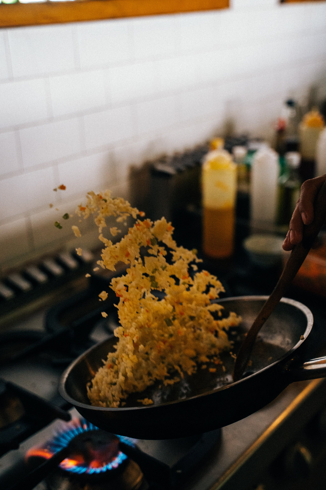

Fried Rice
Home

Description
Japanese chicken fried rice seasoned with chicken bouillon
Ingredients
- 32oz cold rice medium grain
- 4oz chicken meat
- carrots diced
- onions yellow diced
- spring onions chopped
- 2 eggs
- cooking oil
- 1 tsp Dashi
- 1 tsp chicken base bouillon
- black pepper and salt
- 1 tsp minced garlic
- unsalted butter
- scallop soup stock
- 1/2oz soy sauce
- 1/4oz sesame oil
Steps
- Heat wok on high heat
- Add oil
- Crack egg and scramble
- Add chicken and fry to 80-90%
- Add carrots and onions
- Add rice and break down large lumps
- 2-3 pinches of salt
- 1 large pinch of black pepper
- Teaspoon of Garlic
- 2 pinches of Dashi
- 1 pinch of chicken base
- Teaspoon of unsalted butter
- Handful of spring onions
- Add soy sauce
- Add sesame oil
- Garnish with fried and spring onion